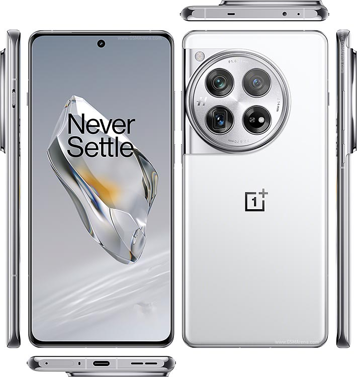
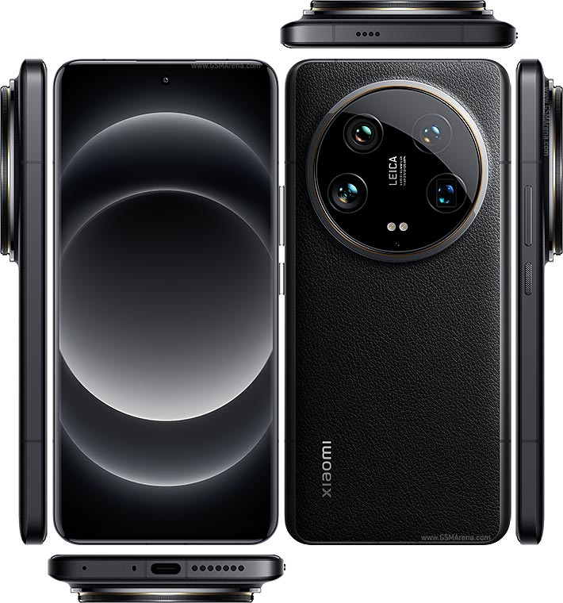

📱Samsung Galaxy S24 Ultra

The Samsung Galaxy S24 Ultra, expected to be Samsung’s flagship phone for
2024, is an anticipated upgrade of the Galaxy S series. Here’s a breakdown
of its key expected features based on leaks and early reports:
🔶Design & Build
🔸Display: 6.8-inch Dynamic AMOLED 2X, with a 120Hz refresh rate and a high
resolution (around 1440 x 3088 pixels). The display is expected to have a
slight curve at the edges but is said to be flatter compared to previous
Ultra models.
🔸Build Material: Likely an Armor Aluminum frame with Gorilla Glass Victus 2
for enhanced durability.
🔸Colors: Typical colors might include Black, Green, Phantom White, and a
few others exclusive to Samsung's online store.
🔶Performance
🔸Processor: Qualcomm Snapdragon 8 Gen 3 (for the U.S. market) or Exynos
2400 (for certain regions). Both are top-tier processors promising
improved power efficiency, AI processing, and gaming performance.
🔸RAM: Options from 12GB to 16GB.
🔸Storage: Starting at 256GB, with options up to 1TB.
🔸Operating System: One UI 6 based on Android 14.
🔶Camera
🔸Main Camera: 200 MP primary sensor, offering superior image quality and
low-light performance.
🔸Zoom Camera: 10 MP periscope telephoto lens with 10x optical zoom and a 50
MP telephoto lens with 3x zoom.
🔸Ultra-Wide Camera: 12 MP for capturing wide-angle shots.
🔸Video Recording: 8K at 30fps, 4K at 60fps, and improved stabilization
features.
🔶Battery & Charging
🔸Battery Capacity: Expected to have a 5000mAh battery.
🔸Charging: 45W wired fast charging, 15W wireless charging, and reverse
wireless charging support.
🔶S Pen Support
🔸The S24 Ultra is expected to come with the S Pen, integrated into the body
like previous Ultra models.
🔶Connectivity & Other Features
🔸5G, Wi-Fi 6E or Wi-Fi 7 support.
🔸In-display Fingerprint Scanner.
🔸Water and Dust Resistance: IP68 certified.
🔸UWB (Ultra Wideband) support for enhanced location tracking.
🔶Expected Release Date & Price
🔸Release: The Galaxy S24 Ultra is likely to be unveiled in early 2024,
possibly in January or February.
🔸Price: Starting around $1,199 to $1,399 depending on the configuration.
🔸With these features, the Galaxy S24 Ultra will likely continue Samsung’s
tradition of pushing cutting-edge technology and premium design in its
flagship lineup.
📱OnePlus 12

The OnePlus 12, expected to be released in late 2023 or early 2024, will
be OnePlus's flagship smartphone, succeeding the OnePlus 11. Here's an
overview of the expected features and specs based on leaks and early
reports:
🔷Design & Build
🔹Display: A 6.7-inch Quad HD+ AMOLED screen,
featuring a 120Hz refresh rate. The screen will likely have a curved
design and will offer sharp, vibrant visuals with deep blacks and HDR10+
support.
🔹Build Material: Aluminum frame with Gorilla Glass on both the
front and back for durability.
🔹Colors: Expected to come in classic colors
like Black and Green, with possible additional color options.
🔷Performance
🔹Processor: Powered by the Qualcomm Snapdragon 8 Gen 3, which is expected
to deliver top-notch performance in terms of speed, power efficiency, and
AI capabilities.
🔹RAM: Options starting from 12GB and going up to 16GB.
🔹Storage: Base model with 256GB of UFS 4.0 storage, possibly up to 512GB or
1TB.
🔹Operating System: OxygenOS 14 based on Android 14, providing a clean
and customizable software experience with optimizations for speed and
smoothness.
🔷Camera
🔹Main Camera: 50 MP Sony IMX9 series primary sensor for
high-quality photos, even in low light.
🔹Telephoto Camera: 64 MP periscope
telephoto lens with up to 3x or 5x optical zoom.
🔹Ultra-Wide Camera: 50 MP
ultra-wide lens for capturing broader scenes with improved detail and
color accuracy.
🔹Hasselblad Partnership: Continuing collaboration with
Hasselblad for enhanced color calibration and overall camera performance.
🔹Video Recording: 8K video recording capabilities with improved
stabilization and night mode performance.
🔷Battery & Charging
🔹Battery Capacity: A 5400mAh battery, which is expected to offer all-day battery
life even under heavy usage.
🔹Charging: Ultra-fast charging with 100W wired
charging and 50W wireless charging. OnePlus has been known for offering
some of the fastest charging speeds, so this will likely continue in the
OnePlus 12.
🔷Connectivity & Other Features
🔹5G: Standard across all variants
for super-fast internet speeds. Wi-Fi 6E or possibly Wi-Fi 7 for better
connectivity in crowded areas.
🔹In-display Fingerprint Scanner: Optical
fingerprint sensor under the display.
🔹Alert Slider: The classic OnePlus
alert slider for quickly switching between silent, vibrate, and ring
modes.
🔹Water Resistance: Likely to feature an IP68 rating for water and
dust resistance.
🔷Other Notable Features
🔹Haptics: Improved haptic feedback
for a more tactile and responsive feel when interacting with the phone.
🔹Cooling System: An upgraded cooling system to handle extended gaming
sessions and heavy workloads without throttling performance.
🔷Expected Release Date & Price
🔹Release Date: Expected to be officially launched in
December 2023 for China and early 2024 globally.
🔹Price: Starting from
around $899 for the base model, with higher prices for models with more
storage and RAM.
🔹The OnePlus 12 is expected to compete with other flagship
devices like the Samsung Galaxy S24 Ultra, bringing top-tier performance,
an advanced camera system, and cutting-edge design.
📱Xiaomi 14 Ultra

The Xiaomi 14 Ultra is expected to be one of Xiaomi’s most premium
flagship smartphones in 2024. As part of the Xiaomi 14 series, it will
likely feature cutting-edge technology and high-end specifications to
compete with other flagship devices like the Samsung Galaxy S24 Ultra and
OnePlus 12. Here’s an overview of what to expect based on early reports
and leaks:
🔶Design & Display
🔸Display:
A 6.73-inch LTPO AMOLED display with
Quad HD+ resolution (3200 x 1440 pixels). The display is expected to
support a 120Hz refresh rate, offering smoother scrolling and gaming
experiences.
🔸Brightness: Peak brightness of over 2,500 nits, ensuring
excellent visibility in bright outdoor environments.
🔸Build: The Xiaomi 14
Ultra will likely have a premium ceramic back with an aluminum frame,
providing a robust and luxurious feel. It may also be water- and
dust-resistant (likely IP68).
🔸Colors: Likely to be available in classic
Black and White variants, with additional colors possible depending on the
region.
🔶Performance
🔸Processor: Powered by the Qualcomm Snapdragon 8 Gen 3,
which is expected to deliver exceptional performance in terms of speed,
power efficiency, AI processing, and gaming.
🔸RAM: Expected configurations
include 12GB and 16GB of LPDDR5X RAM.
🔸Storage: Storage options may start
at 256GB, with options going up to 1TB using UFS 4.0 storage for faster
read and write speeds.
🔸Operating System: Xiaomi’s MIUI 15, based on
Android 14, will offer a heavily customized interface with new features,
animations, and optimizations.
🔶Camera System
The camera is one of the
standout features of Xiaomi’s Ultra models, and the 14 Ultra is expected
to raise the bar:
🔸Main Camera: Likely to feature a 1-inch, 50 MP Sony
IMX989 sensor, offering incredible detail, dynamic range, and low-light
performance. The larger sensor size will contribute to DSLR-like image
quality.
🔸Telephoto Camera: A 50 MP periscope telephoto lens with 10x
optical zoom, enabling detailed long-distance shots.
🔸Ultra-Wide Camera: A
50 MP ultra-wide lens to capture broader scenes, with high detail and
minimized distortion.
🔸Front Camera: Likely to feature a 32 MP front camera
for selfies and video calls.
🔸Leica Partnership: Continuing the
collaboration with Leica, the 14 Ultra is expected to have advanced image
processing, offering Leica color modes for more natural or dramatic
photos.
🔶Battery & Charging
🔸Battery Capacity: A 5,000mAh battery or larger,
expected to support extensive usage, even with its power-hungry display
and processor.
🔸Wired Charging: 120W fast charging, capable of charging the
phone from 0 to 100% in less than 20 minutes.
🔸Wireless Charging: Support
for 50W wireless charging and reverse wireless charging for other
accessories or devices.
🔶Connectivity & Other Features
🔸5G: Standard for
ultra-fast internet speeds and low latency.
🔸Wi-Fi 7 support, offering even
faster wireless connectivity and greater stability in crowded areas.
🔸Bluetooth 5.3 for improved wireless audio and device pairing.
🔸UWB (Ultra-Wideband) technology for advanced location tracking and smart
device interaction.
🔸In-Display Fingerprint Scanner: For fast, secure
unlocking.
🔸Dual Stereo Speakers tuned by Harman Kardon, expected to offer
a high-quality audio experience.
🔶Special Features
🔸Advanced Cooling System:
Expected to feature a liquid cooling or vapor chamber system to manage
heat during high-performance tasks, especially gaming.
🔸Haptic Feedback:
Enhanced haptic motors for more precise vibration feedback during use.
🔸Software Optimizations: MIUI 15 will introduce new customizations,
performance enhancements, and privacy-focused features.
🔶Expected Release
🔸Date & Price Release Date: Likely to be unveiled in early 2024 in China,
with a global release shortly after.
🔸Price: Expected to start around
$1,199 for the base model and go higher depending on the storage and RAM
configurations.
🔸The Xiaomi 14 Ultra is expected to be one of the most
feature-packed and powerful smartphones of 2024, focusing on camera
excellence, cutting-edge performance, and fast charging capabilities,
making it a strong competitor in the flagship market.
📱Motorola Razr 5G

The Motorola Razr 5G, released in 2020, is the second-generation version
of Motorola's modern take on its iconic Razr flip phone. This updated
model brings 5G connectivity, better performance, and various improvements
in design and usability over the first Razr foldable. Here’s a detailed
overview of its key features:
🔷Design & Build
🔹Form Factor: The Razr 5G
maintains the classic clamshell design with a foldable display. When
closed, it’s compact and pocket-friendly, and when unfolded, it reveals a
full smartphone-sized display.
🔹Materials: It has a stainless steel frame
with a glass front and back, making it sleek and durable.
🔹Dimensions: When
unfolded, it measures 6.9 inches tall, and when folded, it's a compact
square.
🔹Colors: Available in several color options including Polished
Graphite, Blush Gold, and Liquid Mercury.
🔷Display
🔹Main Display: A 6.2-inch
P-OLED foldable display with a resolution of 876 x 2142 pixels. It offers
vibrant colors and deep contrasts typical of OLED screens, and the
flexible nature of the display allows it to fold in half.
🔹Secondary Display: There’s also a 2.7-inch G-OLED Quick View display on the outside
(600 x 800 pixels). This external display lets you check notifications,
control media, take selfies, and interact with apps without unfolding the
phone.
🔷Performance
🔹Processor: Powered by the Qualcomm Snapdragon 765G
chipset, which supports 5G connectivity and offers solid mid-range
performance for everyday tasks, app usage, and moderate gaming.
🔹RAM: Comes
with 8GB of RAM, which is more than sufficient for smooth multitasking and
performance.
🔹Storage: 256GB of internal storage, which is ample for
storing apps, media, and files. However, there is no microSD card slot for
storage expansion.
🔹Operating System: Initially launched with Android 10,
it has since been updated to Android 11, and features Motorola's
near-stock Android experience with a few helpful additions like Moto
Actions.
🔷Camera
🔹Main Camera: Features a 48 MP primary camera (f/1.7, OIS)
located on the exterior of the phone. When the phone is folded, this acts
as the rear camera for standard photography, and when unfolded, it
functions as a selfie camera through the Quick View display.
🔹Selfie Camera: There’s also a 20 MP internal selfie camera located in a notch at
the top of the main display for taking selfies when the phone is unfolded.
🔹Camera Features: The camera supports OIS (Optical Image Stabilization),
Night Mode, and 4K video recording at 30fps.
🔷Battery & Charging
🔹Battery Capacity: Comes with a 2800mAh battery, which is somewhat small compared
to other smartphones in 2020, but Motorola has optimized the software to
make the most of it.
🔹Charging: Supports 15W fast charging via a USB-C
port, though wireless charging is not supported. While the battery life is
decent for light to moderate use, it may require a top-up by the end of
the day for heavy users.
🔷Connectivity
🔹5G: Supports 5G networks, though it
is limited to sub-6 GHz 5G, which offers widespread coverage but not the
extremely fast speeds of millimeter-wave 5G.
🔹Other Connectivity: Includes
Wi-Fi 5, Bluetooth 5.1, and NFC for mobile payments.
🔷Special Features
🔹Foldable Display: The folding mechanism has been improved from the
first-generation Razr, offering a more durable hinge and a smoother
folding experience. Motorola claims the hinge design reduces creasing on
the display.
🔹Quick View Display: The external display allows you to reply
to messages, control music, check notifications, and even use apps without
opening the phone.
🔹eSIM and Nano-SIM Support: Unlike the first model,
which only had an eSIM, the Razr 5G also offers a nano-SIM slot for added
flexibility.
🔷Durability
The phone is not officially rated for water or
dust resistance, but it has a water-repellent coating to protect against
splashes and light rain.
🔷Price & Availability
🔹At launch, the Motorola Razr
5G was priced at around $1,399, making it a premium device largely due to
its innovative foldable design.
🔹Over time, the price has decreased,
especially with newer foldable phones entering the market.
🔷Competitors
The Razr 5G competes with other foldable phones like the Samsung Galaxy Z Flip
series, though its nostalgic design and external display set it apart.
🔷Summary
The Motorola Razr 5G is a stylish, modern take on a nostalgic
design, offering a unique blend of foldable technology and 5G
connectivity. It is ideal for users looking for a compact phone with a
large screen, but its smaller battery and mid-range processor make it best
suited for moderate users rather than power users or gamers. The Quick
View display is one of its standout features, allowing users to access
essential functions without unfolding the device.
📱Google Pixel 9 Pro Fold
As of now, there has been no official announcement or substantial leaks
about a Google Pixel 9 Pro Fold. However, we can speculate based on
Google’s existing hardware lineup, particularly the Pixel Fold and Pixel
Pro series, which could inspire the potential development of a foldable
Pixel Pro model. Below is some speculative information based on Google’s
trends in mobile technology, as well as features found in its Pixel 8 Pro
and Pixel Fold models.
🔶Design & Display
🔸Form Factor: If a Google Pixel 9
Pro Fold were to be developed, it would likely feature a book-style
folding design, similar to the Pixel Fold and Samsung Galaxy Z Fold
series. This form factor allows for a larger inner display when unfolded,
providing tablet-like functionality while maintaining a more compact
footprint when closed.
🔸Main Display: It could feature a 7.6-inch LTPO
AMOLED inner display, similar to the Pixel Fold, with a 120Hz refresh rate
for smooth scrolling and better gaming experiences. The display might have
HDR10+ support and high brightness levels for excellent visibility
outdoors.
🔸Cover Display: The external or cover display would likely
measure around 6.2 inches, with similar specs to the Pixel 8 Pro's OLED
screen, including a high refresh rate (120Hz) and durable glass (such as
Gorilla Glass Victus).
🔸Build Quality: We can expect a premium metal and
glass build, with an IP68 rating for water and dust resistance, following
the trend of Google’s premium Pixel devices.
🔶Performance
🔸Processor: Google would probably equip the Pixel 9 Pro Fold with the next generation of its
Google Tensor G4 chipset, continuing the trend of integrating AI and
machine learning capabilities directly into the hardware. The Tensor
series focuses on efficiency, image processing, and AI-based tasks.
🔸RAM & Storage: Expect options such as 12GB or 16GB of RAM, with storage ranging
from 256GB to 1TB using UFS 4.0 for faster read and write speeds.
🔸Operating System: The foldable would launch with Android 15 and feature
Google’s customizations for foldable screens, including optimized
multitasking, split-screen functionality, and enhanced gestures.
🔶Camera
🔸System Main Camera: Following the Pixel 8 Pro, a Pixel 9 Pro Fold could
include an advanced 50 MP primary sensor with OIS (Optical Image
Stabilization) and excellent low-light performance thanks to Google's
computational photography.
🔸Ultra-Wide & Telephoto: It could feature a 12
MP ultra-wide camera and possibly a 48 MP telephoto camera with 5x optical
zoom or higher, making it versatile for various photography needs.
🔸Selfie Cameras: A front-facing camera on the cover display, likely 10.8 MP,
similar to the Pixel 8 Pro, for quick selfies or video calls. The inner
display might have an under-display camera or a punch-hole camera, with
the same resolution, for when the device is unfolded.
🔸Software: Google’s advanced computational photography would enhance the hardware, offering
features like Magic Eraser, Super Res Zoom, Night Sight, and AI-driven
editing.
🔶Battery & Charging
🔸Battery Capacity: A device like the Pixel 9
Pro Fold would need a sizable battery, likely around 5000-5300mAh, to
support its larger dual displays.
🔸Charging: Expect fast wired charging (up
to 30W or more), wireless charging, and reverse wireless charging for
accessories like earbuds. Google tends to prioritize battery optimization
via software, so battery life could be impressive despite the power
demands of the folding form factor.
🔶Connectivity & Other Features
🔸5G Connectivity: Standard 5G support, including mmWave and sub-6 GHz bands
for high-speed internet and low-latency connections.
🔸Wi-Fi 7 and Bluetooth
5.3 for faster, more stable wireless connections and better support for
wireless audio.
🔸UWB (Ultra-Wideband) for precise spatial awareness, which
can be useful for tasks like locating devices or interacting with smart
home systems.
🔸Fingerprint Scanner: Likely integrated under the display or
built into the side power button, similar to the Pixel Fold.
🔸Face Unlock: Advanced Face Unlock could be an option, combining hardware and
software-based face recognition.
🔶Software & Optimizations
🔸Foldable-Specific Features: Google would likely introduce software
enhancements that take full advantage of the folding form factor, such as
seamless app continuity (switching between cover and inner display without
interruption), multi-window support, and fold-specific gestures.
🔸Stock Android Experience: Being a Google device, the Pixel 9 Pro Fold would
feature a clean version of Android, with timely software updates for
several years, including feature drops and security updates.
🔶Expected Release Date & Price
🔸Release Date: If this device were to exist, it could
launch in late 2024 or 2025, following the usual timeline for Google's
flagship devices.
🔸Price: Given the premium nature of foldable devices and
Google's pricing for the Pixel Fold, the Pixel 9 Pro Fold would likely
start at around $1,799 - $1,999, depending on storage and RAM
configurations.
🔶Summary
While the Google Pixel 9 Pro Fold is not a
confirmed product, it would likely combine the best of Google’s hardware
and software expertise. A hypothetical device like this would feature a
high-quality foldable display, powerful Tensor G-series processor,
advanced cameras with Google’s computational photography magic, and 5G
connectivity. It would be targeted at users who want a premium foldable
experience, with seamless integration of Google’s AI-powered features and
Android OS optimizations.
📱Nothing Phone (2)

The Nothing Phone (2), released in July 2023, is the second smartphone
from Nothing, a brand founded by Carl Pei (co-founder of OnePlus). The
Phone (2) builds on the design and ethos of the original Nothing Phone
(1), offering unique features such as a transparent back and Glyph
Interface, while upgrading in terms of performance and user experience.
Here’s an overview of its key features:
🔷Design & Build
🔹Transparent Design:
One of the standout features of the Nothing Phone (2) is its transparent
rear panel, which shows off some of the internal components. The design is
minimalist, with a focus on clean lines and symmetry.
🔹Glyph Interface: The
LED Glyph Interface on the back, made up of over 900 LEDs, can be
customized to display notifications, calls, and charging status. It also
provides visual alerts for certain apps, with new features allowing for
more granular control over how the lights function.
🔹Build Quality: It has
a glass front and back (Gorilla Glass) with an aluminum frame, giving it a
premium feel.
🔹Colors: Available in White and Dark Grey.
🔷Display
🔹Size & Type: The Phone (2) features a 6.7-inch LTPO OLED display, slightly larger
than its predecessor.
🔹Resolution: 1080 x 2412 pixels, which offers Full
HD+ clarity and sharpness.
🔹Refresh Rate: The display supports a 120Hz
adaptive refresh rate, providing smooth scrolling and transitions, while
also dynamically adjusting to save battery life.
🔹HDR10+: It supports
HDR10+, making it ideal for watching high dynamic range content with
richer colors and contrast.
🔷Performance
🔹Processor: Powered by the Qualcomm
Snapdragon 8+ Gen 1 chipset, a significant upgrade over the mid-range
processor in the Phone (1). This SoC brings flagship-level performance,
offering improved efficiency and power for gaming, multitasking, and
overall system responsiveness.
🔹RAM: Available with 8GB or 12GB of LPDDR5
RAM, ensuring smooth performance during heavy multitasking and app usage.
🔹Storage: Comes in 128GB, 256GB, or 512GB UFS 3.1 storage options,
providing fast read/write speeds but no microSD card support.
🔷Operating System & Software
🔹Nothing OS 2.0: Runs on Nothing OS 2.0, based on Android
13, which is a clean, near-stock Android experience with some custom
features like Glyph ringtones, visual tweaks, and smart app management.
The software has minimal bloatware and a focus on speed and simplicity.
🔹Updates: Promises 3 years of Android updates and 4 years of security
patches.
🔷Camera
🔹Main Camera: The Phone (2) has a 50 MP Sony IMX890 sensor
as the primary camera (f/1.9), with OIS (Optical Image Stabilization) and
EIS (Electronic Image Stabilization) for sharper and more stable images,
even in low-light conditions.
🔹Ultra-Wide Camera: A 50 MP ultra-wide lens
(114-degree field of view), offering flexibility for capturing expansive
landscapes and group photos.
🔹Selfie Camera: On the front, there’s a 32 MP
selfie camera (Sony IMX615), delivering high-quality self-portraits and
video calls.
🔹Video Recording: The Phone (2) supports 4K video recording at
30fps on the rear cameras, with 1080p video at 60fps available. The selfie
camera also supports 1080p recording.
🔷Battery & Charging
🔹Battery Capacity: Equipped with a 4700mAh battery, an upgrade from the Phone (1), providing
a full day of use under normal conditions.
🔹Wired Charging: Supports 45W
wired fast charging, capable of charging the phone from 0 to 100% in
around 55 minutes.
🔹Wireless Charging: Offers 15W wireless charging and 5W
reverse wireless charging to power accessories like earbuds.
🔹Battery Life:
With efficient software optimization and the Snapdragon 8+ Gen 1 chipset,
battery life is expected to be solid, especially with the adaptive refresh
rate feature.
🔷Connectivity & Other Features
🔹5G: The Nothing Phone (2)
supports 5G connectivity, providing fast mobile data speeds and
future-proofing the device for evolving networks.
🔹Wi-Fi 6: Ensures faster
and more stable wireless connectivity.
🔹Bluetooth 5.3: For improved
wireless audio and connection stability with devices.
🔹In-display Fingerprint Scanner: An optical fingerprint scanner is built into the
display for secure and fast unlocking.
🔹Face Unlock: Facial recognition is
also supported, providing another biometric unlocking option.
🔷Special Features
🔹Customizable Glyph Interface: The Glyph Interface on the back
allows users to customize LED notifications for calls, messages, and
specific apps. It also has functionality for specific activities like
controlling volume and timers, or showing charging progress in real time.
🔹Haptic Feedback: The Phone (2) has improved haptics, offering a more
tactile and responsive feel during interactions.
🔷Price & Availability
🔹Price: The Nothing Phone (2) is priced competitively for a near-flagship
device, starting at approximately $599 for the base model (8GB/128GB). The
price increases for higher storage and RAM configurations.
🔹Availability:
It’s available in major markets including the US, UK, Europe, and India.
🔷Summary
The Nothing Phone (2) continues the brand’s mission of combining
unique design with solid performance. With its transparent back, Glyph
Interface, flagship-level Snapdragon 8+ Gen 1 processor, and clean Android
experience, it appeals to tech enthusiasts and design-conscious consumers.
It offers a premium experience at a price point that is more accessible
than many flagship devices, making it a strong contender in the
mid-to-premium range market.